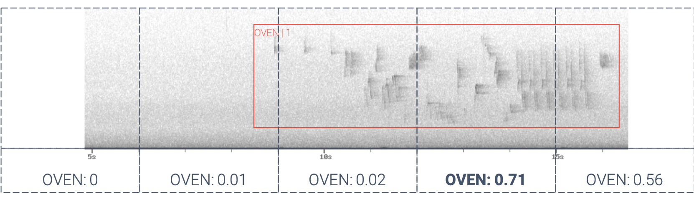

Chapter 5 Setup the data from the report – change this once wt_auth() is working
data <- dir_ls(path = “/users/alexandremacphail/desktop/qc”, regexp = "*tag_details_report.csv") %>% map(~read_csv(., col_types = list(location = col_character(), abundance = col_character(), verified_by = col_character()))) %>% bind_rows()
head(data)
The wildRtrax::wt_ord function conducts a series of steps to return the results of a multi-observer project. The first step in this process involves tidying and preparing the data in a species matrix. The function then runs a redundancy analysis (RDA) on the observer with recording, in other words, location (spatial component) and recording date (temporal component), as a constrained effect. This statistical technique is commonly used to determine the relationship between a set of response variables and a set of predictor variables. In the context of this analysis, the RDA is used to determine the relationship between the observer and the species detections.
The wt_ord function also conducts variance partitioning where necessary to determine the contribution of predictor variables in the RDA. This process helps to identify the factors that have the greatest influence on the relationship between the observer and the species detections, such as the geographic region or habitat type determined by the locations used in the analysis. The function also returns results of a PERMANOVA, adjusted R-squared, and F-statistic to provide information on the overall strength and significance of the relationship of the ordination. The PERMANOVA is a non-parametric statistical method used to test the null hypothesis that there is no difference in the means of the groups being compared. The adjusted R-squared and F-statistic provide information on how well the model fits the data, and the significance of the differences observed between the groups.
In addition to the RDA, the wt_ord function also runs a generalized linear mixed model (GLMM) on the tag start time against observer, with recording as a random effect. GLMMs are widely used in statistical analysis, and are especially useful for analyzing data that has both fixed and random effects. By using a GLMM in this context, the wt_ord function can determine if there are any significant differences between the observers and the mean of the group.
# Using the most recent quality control
res <- wt_ord(input = data, min_obs = 11, confidence = 0.67)5.0.1 False negative rates and BirdNET
When processing a task, it is possible for an observer to miss an individual. This false negative (FN) state can be addressed by utilizing BirdNET, a software tool that detects the species in 3-second intervals and intersects it with the tag, resulting in a maximum probability score ranging from 0 to 1. WildTrax, which utilizes the BirdNET API, can extract the maximum probability score exclusively for the species in question from all 3-second intervals that intersect with the tag, returning it as a result. This probability score indicates the likelihood of BirdNET detecting the species in that specific interval, and if BirdNET fails to detect the species, the probability score will be 0.

Once all tasks are transcribed, access the Data Downloads page and extract the zip file to obtain the summary report and *_recording_birdnet_summary.csv*. These files will be used to intersect the human-created tags with the results obtained from BirdNET.
## # A tibble: 33,048 × 8
## organization location recording_date audio_length scientific_name window_start_time window_…¹ confi…²
## <chr> <chr> <dttm> <dbl> <chr> <dbl> <dbl> <dbl>
## 1 ABMI 1081-NE 2021-04-06 07:29:00 600 Branta canadensis 51 54 71.7
## 2 ABMI 1081-NE 2021-04-06 07:29:00 600 Branta canadensis 201 204 45.4
## 3 ABMI 1081-NE 2021-04-06 07:29:00 600 Branta canadensis 207 210 40.4
## 4 ABMI 1081-NE 2021-04-06 07:29:00 600 Branta canadensis 210 213 45.6
## 5 ABMI 1081-NE 2021-04-06 07:29:00 600 Poecile atricapillus 561 564 51.1
## 6 ABMI 1081-NE 2021-04-06 07:29:00 600 Poecile atricapillus 564 567 44.4
## 7 ABMI 1081-NE 2021-04-06 07:29:00 600 Poecile atricapillus 567 570 44.2
## 8 ABMI 1081-NE 2021-04-06 07:29:00 600 Poecile atricapillus 570 573 73.7
## 9 ABMI 1081-NE 2021-04-06 07:29:00 600 Poecile atricapillus 573 576 51.3
## 10 ABMI 1081-NE 2021-04-06 07:29:00 600 Poecile atricapillus 576 579 86.1
## # … with 33,038 more rows, and abbreviated variable names ¹window_end_time, ²confidencefn <- raw_data %>%
filter(!window_start_time >= 180) %>%
select(location, recording_date, scientific_name, window_start_time, confidence) %>%
distinct() %>%
inner_join(., cls %>% select(species_code, species_common_name, scientific_name), by = c("scientific_name" = "scientific_name")) %>%
add_column(observer = "BirdNET") %>%
add_column(project_name = "BirdNET Output") %>%
select(project_name, location, recording_date, observer, species_code, window_start_time, confidence) %>%
rename("tag_start_s" = 6) %>%
mutate(tag_start_s = as.double(tag_start_s)) %>%
add_column(abundance = "1")## # A tibble: 41,882 × 13
## organizat…¹ locat…² recording_date audio…³ scien…⁴ windo…⁵ windo…⁶ confi…⁷ proje…⁸ obser…⁹ speci…˟ tag_s…˟
## <chr> <chr> <dttm> <dbl> <chr> <dbl> <dbl> <dbl> <chr> <chr> <chr> <dbl>
## 1 ABMI 1081-NE 2021-04-06 07:29:00 600 Branta… 51 54 71.7 <NA> <NA> <NA> NA
## 2 ABMI 1081-NE 2021-04-06 07:29:00 600 Branta… 201 204 45.4 <NA> <NA> <NA> NA
## 3 ABMI 1081-NE 2021-04-06 07:29:00 600 Branta… 207 210 40.4 <NA> <NA> <NA> NA
## 4 ABMI 1081-NE 2021-04-06 07:29:00 600 Branta… 210 213 45.6 <NA> <NA> <NA> NA
## 5 ABMI 1081-NE 2021-04-06 07:29:00 600 Poecil… 561 564 51.1 <NA> <NA> <NA> NA
## 6 ABMI 1081-NE 2021-04-06 07:29:00 600 Poecil… 564 567 44.4 <NA> <NA> <NA> NA
## 7 ABMI 1081-NE 2021-04-06 07:29:00 600 Poecil… 567 570 44.2 <NA> <NA> <NA> NA
## 8 ABMI 1081-NE 2021-04-06 07:29:00 600 Poecil… 570 573 73.7 <NA> <NA> <NA> NA
## 9 ABMI 1081-NE 2021-04-06 07:29:00 600 Poecil… 573 576 51.3 <NA> <NA> <NA> NA
## 10 ABMI 1081-NE 2021-04-06 07:29:00 600 Poecil… 576 579 86.1 <NA> <NA> <NA> NA
## # … with 41,872 more rows, 1 more variable: abundance <chr>, and abbreviated variable names ¹organization,
## # ²location, ³audio_length, ⁴scientific_name, ⁵window_start_time, ⁶window_end_time, ⁷confidence, ⁸project_name,
## # ⁹observer, ˟species_code, ˟tag_start_s5.0.2 Abundance estimation
Estimating abundance is crucial for understanding population dynamics and making informed conservation decisions. By accurately quantifying the number of individuals within a survey area, researchers can track population changes over time and evaluate the effectiveness of conservation or management efforts. This is typically done through repeated surveys over time, which allow for the calculation of important population metrics such as occupancy, detectability, and colonization/extinction.
However, sometimes estimating abundance is not always possible, particularly when dealing with large or elusive species. In these cases, the WildTrax platform uses “Too Many to Tag” (TMTT) as a way to indicate that the number of individuals cannot be directly counted or estimated. To address this issue, wildRtrax provides the wt_replace_tmtt function, which runs a generalized linear mixed model using existing data in the dataset to generate a numeric value for TMTT.

For instance, if a survey records 100 detections, of which 70 are abundance = 1, 29 are abundance = 2, and 1 is abundance = TMTT, the function would estimate the TMTT value at approximately 1.2. This helps improve the accuracy of abundance estimates and allows for more robust analysis.
5.1 Basic analysis
Wildtrax provides a variety of biological metrics and data, which can be analyzed using basic statistical techniques to gain insights into wildlife populations and their distribution. For example, researchers can use occupancy modeling to estimate the probability of species presence in different habitats or use mark-recapture models to estimate population size. Other common analyses include habitat selection modeling, home range analysis, and species diversity estimation using species accumulation curves and rarefaction analysis.
5.1.2 Species accumulation and rarefaction
Species accumulation refers to the process of counting the number of different species present in a sample of a particular size. The idea is to keep adding new samples until the total number of species observed reaches a plateau or levels off. The curve that results from plotting the number of species against the number of samples is called a species accumulation curve, and it provides information about the rate of species discovery and the completeness of sampling.
Rarefaction is a statistical method used to estimate the expected number of species in a community, given a fixed number of individuals or samples. This technique is particularly useful when comparing the diversity of different communities that have been sampled unevenly, i.e., with different sample sizes. The rarefaction curve represents the expected number of species in a community as a function of the number of individuals or samples, and it can help researchers make fair comparisons of diversity between communities.